Moran’s Eigenvector Maps and related methods for the spatial multiscale analysis of ecological data
Stéphane Dray
2024-01-11
Source:vignettes/tutorial.Rmd
tutorial.RmdThe package adespatial contains functions for the
multiscale analysis of spatial multivariate data. It implements some new
functions and reimplements existing functions that were available in
packages of the sedaR project hosted on R-Forge
(spacemakeR, packfor, AEM, etc.).
It can be seen as a bridge between packages dealing with multivariate
data (e.g., ade4, Dray and Dufour
(2007)) and
packages that deals with spatial data (sp,
spdep). In adespatial, many methods consider
the spatial information as a spatial weighting matrix (SWM), object of
class listw provided by the spdep package (Figure 1). The SWM is defined as the Hadamard
product (element-wise product) of a connectivity matrix by a weighting
matrix. The binary connectivity matrix (spatial neighborhood, object of
class nb) defines the pairs of connected and unconnected
samples, while the weighting matrix allows weighting the connections,
for instance to define that the strength of the connection between two
samples decreases with the geographic distance.
Once SWM is defined, it can be used to build Moran’s Eigenvector Maps (MEM, Dray, Legendre, and Peres-Neto (2006)) that are orthogonal vectors maximizing the spatial autocorrelation (measured by Moran’s coefficient). These spatial predictors can be used in multivariate statistical methods to provide spatially-explicit multiscale tools (Dray et al. 2012). This document provides a description of the main functionalities of the package.
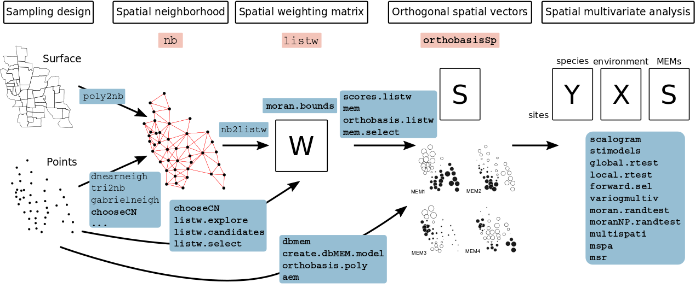Figure 1: Schematic representation of the functioning
of the adespatial package. Classes are represented in pink
frames and functions in blue frames. Classes and functions provided by
adespatial are in bold.
To run the different analysis described, several packages are required and are loaded:
## Registered S3 methods overwritten by 'adegraphics':
## method from
## biplot.dudi ade4
## kplot.foucart ade4
## kplot.mcoa ade4
## kplot.mfa ade4
## kplot.pta ade4
## kplot.sepan ade4
## kplot.statis ade4
## scatter.coa ade4
## scatter.dudi ade4
## scatter.nipals ade4
## scatter.pco ade4
## score.acm ade4
## score.mix ade4
## score.pca ade4
## screeplot.dudi ade4## Registered S3 method overwritten by 'spdep':
## method from
## plot.mst ape## Registered S3 methods overwritten by 'adespatial':
## method from
## plot.multispati adegraphics
## print.multispati ade4
## summary.multispati ade4##
## Attaching package: 'adespatial'## The following object is masked from 'package:ade4':
##
## multispati##
## Attaching package: 'adegraphics'## The following objects are masked from 'package:ade4':
##
## kplotsepan.coa, s.arrow, s.class, s.corcircle, s.distri, s.image,
## s.label, s.logo, s.match, s.traject, s.value, table.value,
## triangle.class## Loading required package: spData## To access larger datasets in this package, install the spDataLarge
## package with: `install.packages('spDataLarge',
## repos='https://nowosad.github.io/drat/', type='source')`## Loading required package: sf## Linking to GEOS 3.10.2, GDAL 3.4.1, PROJ 8.2.1; sf_use_s2() is TRUE##
## Attaching package: 'spdep'## The following object is masked from 'package:ade4':
##
## mstreeThe Mafragh data set
The Mafragh data set is used to illustrate several methods. It is
available in the ade4 package and stored as a
list:
## [1] "list"
names(mafragh)## [1] "xy" "flo" "neig" "env"
## [5] "partition" "area" "tre" "traits"
## [9] "nb" "Spatial" "spenames" "Spatial.contour"
dim(mafragh$flo)## [1] 97 56The data.frame mafragh$flo is a floristic
table that contains the abundance of 56 plant species in 97 sites in
Algeria. Names of species are listed in mafragh$spenames.
The geographic coordinates of the sites are given in
mafragh$xy.
str(mafragh$env)## 'data.frame': 97 obs. of 11 variables:
## $ Clay : num 0.73 0.75 0.74 0.23 0.73 0.72 0.52 0.42 0.74 0.53 ...
## $ Silt : num 0.24 0.24 0.24 0.26 0.24 0.22 0.46 0.49 0.24 0.44 ...
## $ Sand : num 0.03 0.02 0.02 0.49 0.03 0.03 0.02 0.08 0.02 0.04 ...
## $ K2O : num 1.3 0.8 1.7 0.3 1.3 1.7 0.8 1.4 1.7 1.4 ...
## $ Mg++ : num 9.2 10.7 8.6 2 9.2 6 6 19.6 8.6 17 ...
## $ Na+/100g : num 4.2 10.4 10.8 1.2 4.2 10.7 18.4 2.5 10.8 11.7 ...
## $ K+ : num 1.2 1.4 1.9 0.3 1.2 1.3 2.2 1.3 1.9 0.5 ...
## $ Conductivity: num 7.9 11.5 10.4 0.6 7.9 14.5 15.2 2.9 10.4 16.9 ...
## $ Retention : num 41.8 42.4 41.4 22.3 41.8 42.7 37.4 35.4 41.4 38 ...
## $ Na+/l : num 48.7 66 24 2.2 48.7 ...
## $ Elevation : num 6 2 2 6 6 4 4 3 3 6 ...The data.frame mafragh$env contains 11
quantitative environmental variables. A map of the study area is also
available (mafragh$Spatial.contour) that can be used as a
background to display the sampling design:
mxy <- as.matrix(mafragh$xy)
rownames(mxy) <- NULL
s.label(mxy, ppoint.pch = 15, ppoint.col = "darkseagreen4", Sp = mafragh$Spatial.contour)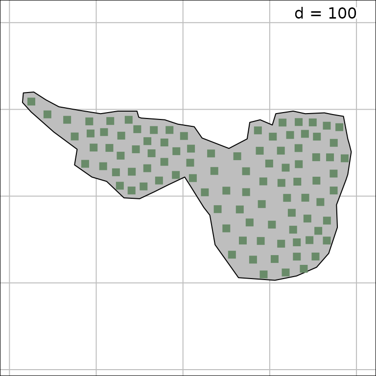
A more detailed description of the data set is available at http://pbil.univ-lyon1.fr/R/pdf/pps053.pdf (in French).
The functionalities of the adegraphics package (Siberchicot et al. 2017) can be used to
design simple thematic maps to represent data. For instance, it is
possible to represent the spatial distribution of two species using the
s.Spatial function applied on Voronoi polygons contained in
mafragh$Spatial:
mafragh$spenames[c(1, 11), ]## scientific code
## Sp1 Arisarum vulgare Arvu
## Sp11 Bolboschoenus maritimus Boma
fpalette <- colorRampPalette(c("white", "darkseagreen2", "darkseagreen3", "palegreen4"))
sp.flo <- SpatialPolygonsDataFrame(Sr = mafragh$Spatial, data = mafragh$flo, match.ID = FALSE)
s.Spatial(sp.flo[,c(1, 11)], col = fpalette(3), nclass = 3)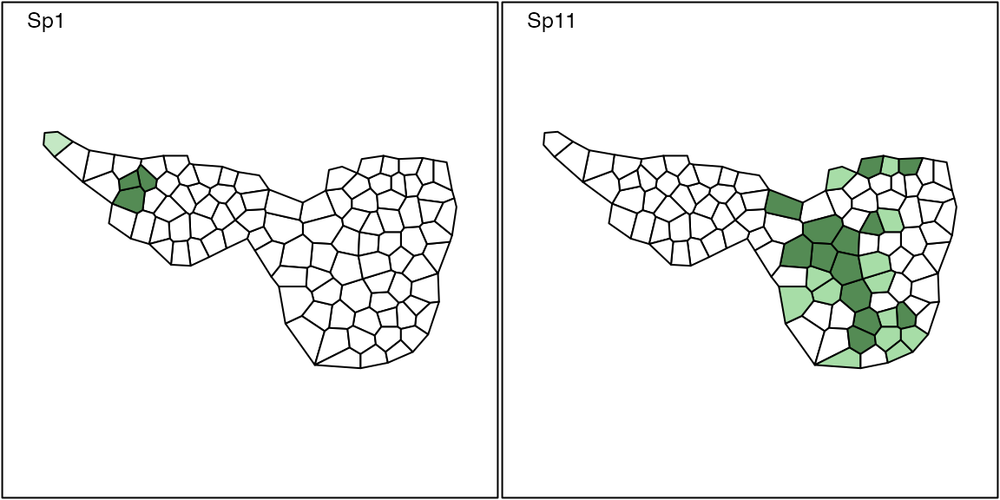
Building spatial neighborhood
Spatial neighborhoods are managed in spdep as objects of
class nb. It corresponds to the notion of connectivity
matrices discussed in Dray, Legendre, and
Peres-Neto (2006) and can be represented by an
unweighted graph. Various functions allow to create nb
objects from geographic coordinates of sites. We present different
alternatives according to the design of the sampling scheme.
Surface data
The function poly2nb allows to define neighborhood when
the sampling sites are polygons and not points (two regions are
neighbors if they share a common boundary). The resulting object can be
plotted on a geographical map using the s.Spatial function
of the adegraphics package (Siberchicot et al.
2017).
## [1] "SpatialPolygons"
## attr(,"package")
## [1] "sp"
nb.maf <- poly2nb(mafragh$Spatial)
s.Spatial(mafragh$Spatial, nb = nb.maf, plabel.cex = 0, pnb.edge.col = 'red')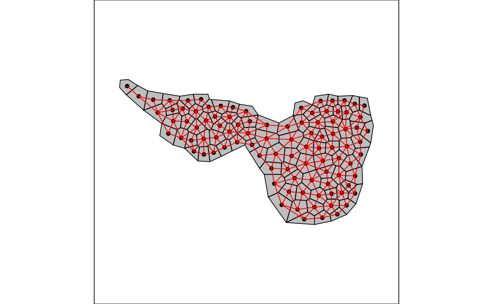
Regular grid and transect
If the sampling scheme is based on regular sampling (e.g., grid of 8 rows and 10 columns), spatial coordinates can be easily generated:
xygrid <- expand.grid(x = 1:10, y = 1:8)
s.label(xygrid, plabel.cex = 0)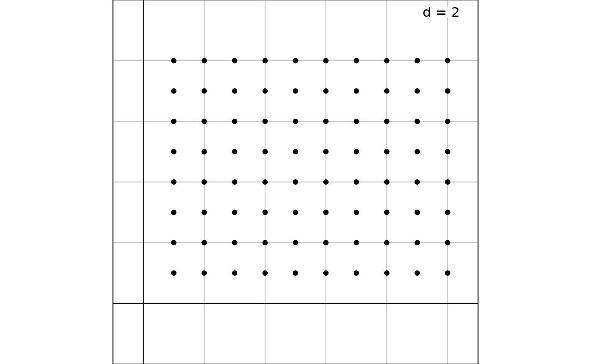
For a regular grid, spatial neighborhood can be created with the
function cell2nb. Two types of neighborhood can be defined.
The queen specification considered horizontal, vertical and
diagonal edges whereas the rook specification considered
only horizontal and vertical edges:
nb2.q <- cell2nb(8, 10, type = "queen")
nb2.r <- cell2nb(8, 10, type = "rook")
s.label(xygrid, nb = nb2.q, plabel.cex = 0, main = "Queen neighborhood")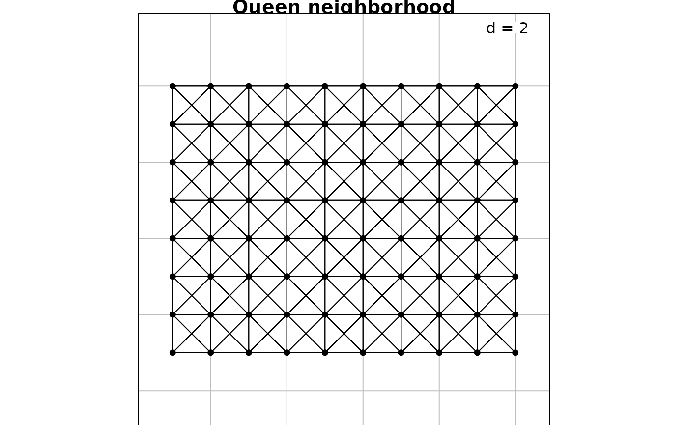
s.label(xygrid, nb = nb2.r, plabel.cex = 0, main = "Rook neighborhood")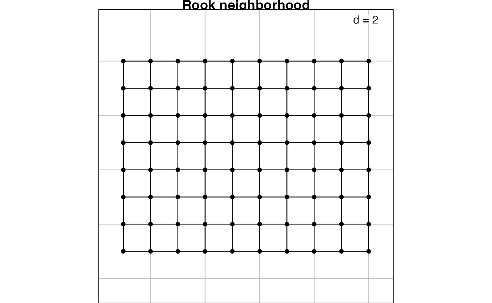
The function cell2nb is the easiest way to deal with
transects by considering a grid with only one row:
xytransect <- expand.grid(1:20, 1)
nb3 <- cell2nb(20, 1)
summary(nb3)## Neighbour list object:
## Number of regions: 20
## Number of nonzero links: 38
## Percentage nonzero weights: 9.5
## Average number of links: 1.9
## Link number distribution:
##
## 1 2
## 2 18
## 2 least connected regions:
## 1:1 1:20 with 1 link
## 18 most connected regions:
## 1:2 1:3 1:4 1:5 1:6 1:7 1:8 1:9 1:10 1:11 1:12 1:13 1:14 1:15 1:16 1:17 1:18 1:19 with 2 linksAll sites have two neighbors except the first and the last one.
Irregular sampling
There are many ways to define the neighborhood in the case of
irregular samplings. We consider a random subsample of 20 sites of the
mafragh data set to better illustrate the differences
between methods:
set.seed(3)
xyir <- mxy[sample(1:nrow(mafragh$xy), 20),]
s.label(xyir, main = "Irregular sampling with 20 sites")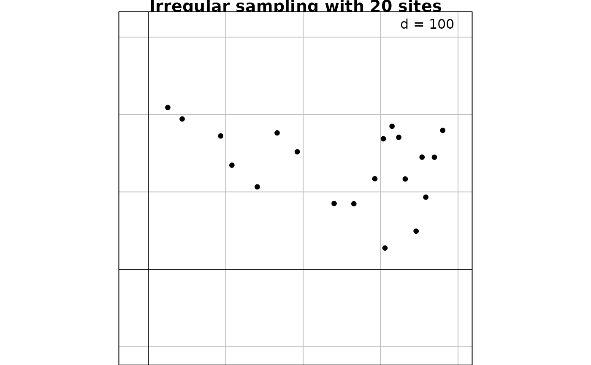
The most intuitive way is to consider that sites are neighbors (or
not) according to the distances between them. This definition is
provided by the dnearneigh function:
nbnear1 <- dnearneigh(xyir, 0, 50)
nbnear2 <- dnearneigh(xyir, 0, 305)
g1 <- s.label(xyir, nb = nbnear1, pnb.edge.col = "red", main = "neighbors if 0<d<50", plot = FALSE)
g2 <- s.label(xyir, nb = nbnear2, pnb.edge.col = "red", main = "neighbors if 0<d<305", plot = FALSE)
cbindADEg(g1, g2, plot = TRUE)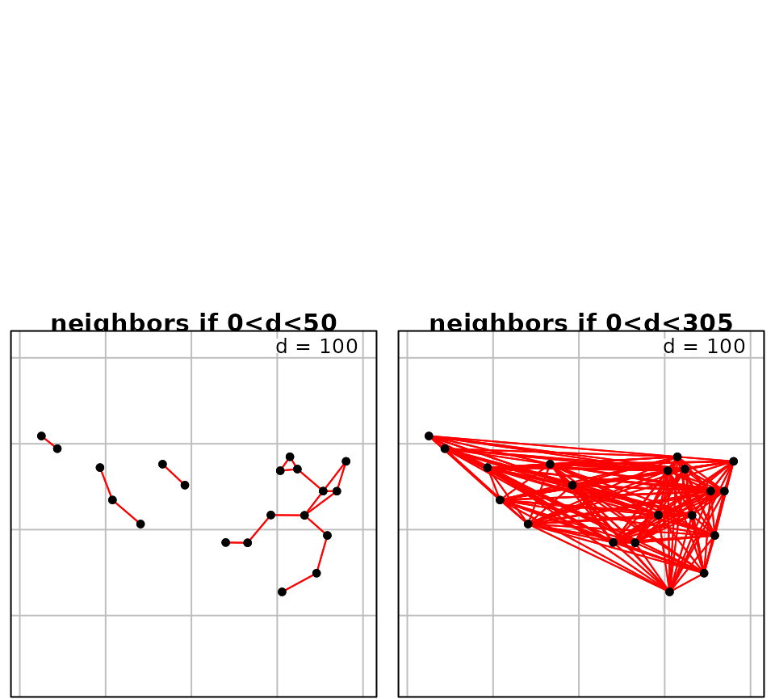
Using a distance-based criteria could lead to unbalanced graphs. For instance, if the maximum distance is too low, some points have no neighbors:
nbnear1## Neighbour list object:
## Number of regions: 20
## Number of nonzero links: 38
## Percentage nonzero weights: 9.5
## Average number of links: 1.9
## 4 disjoint connected subgraphsOn the other hand, if the maximum distance is too high, all sites are connected:
nbnear2## Neighbour list object:
## Number of regions: 20
## Number of nonzero links: 354
## Percentage nonzero weights: 88.5
## Average number of links: 17.7It is also possible to define neighborhood by a criteria based on nearest neighbors. However, this option can lead to non-symmetric neighborhood: if site A is the nearest neighbor of site B, it does not mean that site B is the nearest neighbor of site A.
The function knearneigh creates an object of class
knn. It can be transformed into a nb object
with the function knn2nb. This function has an argument
sym which can be set to TRUE to force the
output neighborhood to symmetry.
knn1 <- knearneigh(xyir, k = 1)
nbknn1 <- knn2nb(knn1, sym = TRUE)
knn2 <- knearneigh(xyir, k = 2)
nbknn2 <- knn2nb(knn2, sym = TRUE)
g1 <- s.label(xyir, nb = nbknn1, pnb.edge.col = "red", main = "Nearest neighbors (k=1)", plot = FALSE)
g2 <- s.label(xyir, nb = nbknn2, pnb.edge.col = "red", main = "Nearest neighbors (k=2)", plot = FALSE)
cbindADEg(g1, g2, plot = TRUE)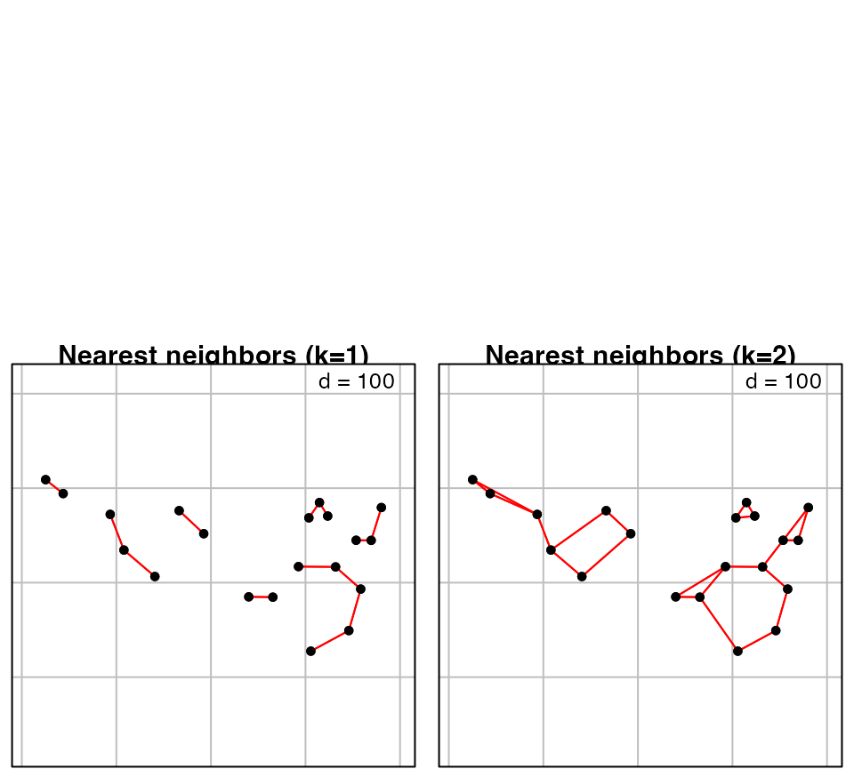
This definition of neighborhood can lead to unconnected subgraphs.
The function n.comp.nb finds the number of disjoint
connected subgraphs:
n.comp.nb(nbknn1)## $nc
## [1] 7
##
## $comp.id
## [1] 1 2 3 1 4 5 3 6 2 3 3 7 1 6 5 4 7 5 7 3More elaborate procedures are available to define neighborhood. For
instance, Delaunay triangulation is obtained with the function
tri2nb. It requires the package deldir. Other
graph-based procedures are also available:
nbtri <- tri2nb(xyir)## Warning in sn2listw(df1): style is M (missing); style should be set to a valid
## value
nbgab <- graph2nb(gabrielneigh(xyir), sym = TRUE)
nbrel <- graph2nb(relativeneigh(xyir), sym = TRUE)
g1 <- s.label(xyir, nb = nbtri, pnb.edge.col = "red", main = "Delaunay", plot = FALSE)
g2 <- s.label(xyir, nb = nbgab, pnb.edge.col = "red", main = "Gabriel", plot = FALSE)
g3 <- s.label(xyir, nb = nbrel, pnb.edge.col = "red", main = "Relative", plot = FALSE)
ADEgS(list(g1, g2, g3)) 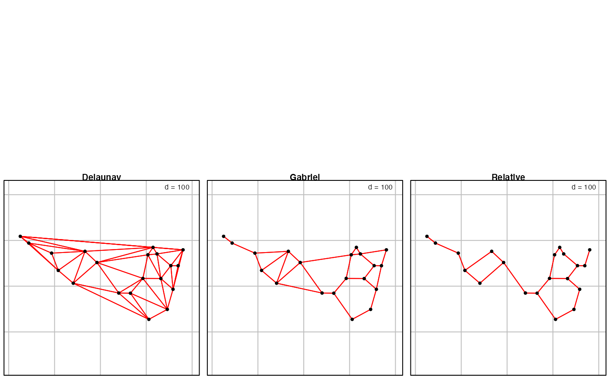
The adespatial functions chooseCN and
listw.candidates provides simple ways to build spatial
neighborhoods. They are wrappers of many of the spdep
functions presented above. The function listw.explore is an
interactive graphical interface that allows to generate R code to build
neighborhood objects (see Figure 2).
Manipulating nb objects
A nb object is not stored as a matrix. It is a list of
neighbors. The neighbors of the first site are in the first element of
the list:
nbgab[[1]]## [1] 6 13Various tools are provided by spdep to deal with these
objects. For instance, it is possible to identify differences between
two neighborhoods:
diffnb(nbgab, nbrel)## Neighbour list object:
## Number of regions: 20
## Number of nonzero links: 14
## Percentage nonzero weights: 3.5
## Average number of links: 0.7
## 10 regions with no links:
## 4 5 7 9 10 11 16 17 18 20
## 13 disjoint connected subgraphsUsually, it can be useful to remove some connections due to edge
effects. In this case, the function edit.nb provides an
interactive tool to add or delete connections.
The function include.self allows to include a site in
its own list of neighbors (self-loops). The spdep package
provides many other tools to manipulate nb objects:
intersect.nb(nb.obj1, nb.obj2)
union.nb(nb.obj1, nb.obj2)
setdiff.nb(nb.obj1, nb.obj2)
complement.nb(nb.obj)
droplinks(nb, drop, sym = TRUE)
nblag(neighbours, maxlag)Defining spatial weighting matrices
A spatial weighting matrices (SWM) is computed by a transformation of a spatial neighborhood. We consider the Gabriel graph for the full data set:
nbgab <- graph2nb(gabrielneigh(mxy), sym = TRUE)In R, SWM are not stored as matrices but as objects of the class
listw. This format is more efficient than a matrix
representation to manage large data sets. An object of class
listw can be easily created from an object of class
nb with the function nb2listw.
Different objects listw can be obtained from a
nb object. The argument style allows to define
a transformation of the matrix such as standardization by row sum, by
total sum or binary coding, etc. General spatial weights can be
introduced by the argument glist. This allows to introduce,
for instance, a weighting relative to the distances between the points.
For this task, the function nbdists is very useful as it
computes Euclidean distance between neighbor sites defined by an
nb object.
To obtain a simple row-standardization, the function is simply called by:
nb2listw(nbgab)## Characteristics of weights list object:
## Neighbour list object:
## Number of regions: 97
## Number of nonzero links: 450
## Percentage nonzero weights: 4.782655
## Average number of links: 4.639175
##
## Weights style: W
## Weights constants summary:
## n nn S0 S1 S2
## W 97 9409 97 45.3915 395.3193More sophisticated forms of spatial weighting matrices can be defined. For instance, it is possible to weight edges between neighbors as functions of geographic distances. In a fist step, distances between neighbors are obtained by the function :
distgab <- nbdists(nbgab, mxy)
nbgab[[1]]## [1] 2 4 5 6
distgab[[1]]## [1] 16.63971 21.34986 14.54966 16.99176Then, spatial weights are defined as a function of distance (e.g. \(1-d_{ij}/max(d_{ij})\)):
And the spatial weighting matrix is then created:
listwgab <- nb2listw(nbgab, glist = fdist)
listwgab## Characteristics of weights list object:
## Neighbour list object:
## Number of regions: 97
## Number of nonzero links: 450
## Percentage nonzero weights: 4.782655
## Average number of links: 4.639175
##
## Weights style: W
## Weights constants summary:
## n nn S0 S1 S2
## W 97 9409 97 45.41085 395.21
names(listwgab)## [1] "style" "neighbours" "weights"
listwgab$neighbours[[1]]## [1] 2 4 5 6
listwgab$weights[[1]]## [1] 0.2505174 0.2472375 0.2519728 0.2502723The matrix representation of a listw object can also be
obtained:
## [,1] [,2] [,3] [,4] [,5] [,6] [,7] [,8] [,9] [,10]
## 1 0.000 0.251 0.000 0.247 0.252 0.250 0.000 0.000 0.000 0
## 2 0.250 0.000 0.250 0.000 0.000 0.250 0.250 0.000 0.000 0
## 3 0.000 0.251 0.000 0.000 0.000 0.000 0.251 0.249 0.249 0
## 4 0.199 0.000 0.000 0.000 0.201 0.200 0.000 0.000 0.000 0
## 5 0.503 0.000 0.000 0.497 0.000 0.000 0.000 0.000 0.000 0
## 6 0.201 0.201 0.000 0.199 0.000 0.000 0.202 0.000 0.000 0
## 7 0.000 0.200 0.200 0.000 0.000 0.201 0.000 0.199 0.000 0
## 8 0.000 0.000 0.167 0.000 0.000 0.000 0.167 0.000 0.167 0
## 9 0.000 0.000 0.333 0.000 0.000 0.000 0.000 0.335 0.000 0
## 10 0.000 0.000 0.000 0.000 0.000 0.000 0.000 0.000 0.000 0To facilitate the building of spatial neighborhoods (nb
object) and associated spatial weighting matrices (listw
object), the package adespatial provides several tools. An
interactive graphical interface is launched by the call
listw.explore() assuming that spatial coordinates are still
stored in an object of the R session (Figure
2).
Creating spatial predictors
The package adespatial provide different tools to build
spatial predictors that can be incorporated in multivariate analysis.
They are orthogonal vectors stored in a object of class
orthobasisSp. Orthogonal polynomials of geographic
coordinates can be computed by the function orthobasis.poly
whereas principal coordinates of neighbour matrices (PCNM, Borcard and Legendre (2002)) are obtained by the function
dbmem.
The Moran’s Eigenvectors Maps (MEMs) provide the most flexible framework. If we consider the \(n \times n\) spatial weighting matrix \(\mathbf{W} = [w_{ij}]\), they are the \(n-1\) eigenvectors obtained by the diagonalization of the doubly-centred SWM:
\[ \mathbf{\Omega V}= \mathbf{V \Lambda} \]
where \(\mathbf{\Omega} = \mathbf{HWH}\) is the doubly-centred SWM and \(\mathbf{H} = \left ( \mathbf{I}-\mathbf{11}\hspace{-0.05cm}^{\top}\hspace{-0.05cm}/n \right )\) is the centring operator.
MEMs are orthogonal vectors with a unit norm that maximize Moran’s coefficient of spatial autocorrelation (Griffith 1996; Dray et al. 2012) and are stored in matrix \(\mathbf{V}\).
MEMs are provided by the functions scores.listw or
mem of the adespatial package. These two
functions are exactly identical (both are kept for historical reasons
and compatibility) and return an object of class
orthobasisSp.
mem.gab <- mem(listwgab)
mem.gab## Orthobasis with 97 rows and 96 columns
## Only 6 rows and 4 columns are shown
## MEM1 MEM2 MEM3 MEM4
## 1 0.9251530 -2.050270 -0.6159371 -1.13648688
## 2 0.8495416 -1.859746 -0.4163876 -0.57971608
## 3 0.8092292 -1.699300 -0.1970169 0.02251458
## 4 1.0455937 -2.177654 -0.7488499 -1.45727142
## 5 0.7098875 -1.571499 -0.5144638 -1.00604362
## 6 0.9629486 -2.017900 -0.5572747 -0.92335694This object contains MEMs, stored as a data.frame and
other attributes:
class(mem.gab)## [1] "orthobasisSp" "orthobasis" "data.frame"
names(attributes(mem.gab))## [1] "names" "class" "row.names" "values" "weights" "call"The eigenvalues associated to MEMs are stored in the attribute called
values:
barplot(attr(mem.gab, "values"),
main = "Eigenvalues of the spatial weighting matrix", cex.main = 0.7)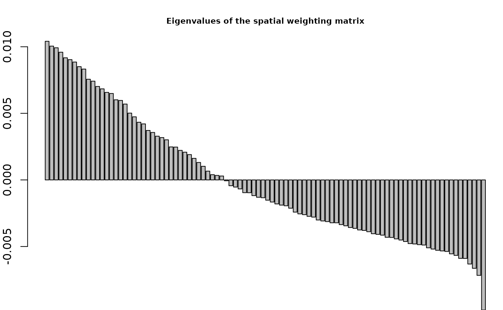
par(oldpar)A plot method is provided to represent MEMs. By default,
eigenvectors are represented as a table (sites as rows, MEMs as
columns). This representation is usually not informative and it is
better to map MEMs in the geographical space by documenting the argument
SpORcoords:
or using the more flexible s.value function:

Moran’s I can be computed and tested for each eigenvector with the
moran.randtest function:
moranI <- moran.randtest(mem.gab, listwgab, 99)As demonstrated in Dray, Legendre, and Peres-Neto (2006), eigenvalues and Moran’s I are equal (post-multiply by a constant):
## MEM1.statistic MEM2.statistic MEM3.statistic MEM4.statistic MEM5.statistic
## 0.01030928 0.01030928 0.01030928 0.01030928 0.01030928
## MEM6.statistic
## 0.01030928Describing spatial patterns
In the previous sections, we considered only the spatial information
as a geographic map, a spatial weighting matrix (SWM) or a basis of
spatial predictors (e.g., MEM). In the next sections, we will show how
the spatial information can be integrated to analyze multivariate data
and identify multiscale spatial patterns. The dataset
mafragh available in ade4 will be used to
illustrate the different methods.
Moran’s coefficient of spatial autocorrelation
The SWM can be used to compute the level of spatial autocorrelation of a quantitative variable using the Moran’s coefficient. If we consider the \(n \times 1\) vector \(\mathbf{x} = \left ( {x_1 \cdots x_n } \right )\hspace{-0.05cm}^{\top}\hspace{-0.05cm}\) containing measurements of a quantitative variable for \(n\) sites and \(\mathbf{W} = [w_{ij}]\) the SWM. The usual formulation for Moran’s coefficient (MC) of spatial autocorrelation is: \[ MC(\mathbf{x}) = \frac{n\sum\nolimits_{\left( 2 \right)} {w_{ij} (x_i -\bar {x})(x_j -\bar {x})} }{\sum\nolimits_{\left( 2 \right)} {w_{ij} } \sum\nolimits_{i = 1}^n {(x_i -\bar {x})^2} }\mbox{ where }\sum\nolimits_{\left( 2 \right)} =\sum\limits_{i = 1}^n {\sum\limits_{j = 1}^n } \mbox{ with }i\ne j \]
MC can be rewritten using matrix notation: \[ MC(\mathbf{x}) = \frac{n}{\mathbf{1}\hspace{-0.05cm}^{\top}\hspace{-0.05cm}\mathbf{W1}}\frac{\mathbf{z}\hspace{-0.05cm}^{\top}\hspace{-0.05cm}{\mathbf{Wz}}}{\mathbf{z}\hspace{-0.05cm}^{\top}\hspace{-0.05cm}\mathbf{z}} \] where \(\mathbf{z} = \left ( \mathbf{I}-\mathbf{1}\mathbf{1}\hspace{-0.05cm}^{\top}\hspace{-0.05cm}/n \right )\mathbf{x}\) is the vector of centred values (i.e., \(z_i = x_i-\bar{x}\)).
The function moran.mc of the spdep package
allows to compute and test, by permutation, the significance of the
Moran’s coefficient. A wrapper is provided by the
moran.randtest function to test simultaneously and
independently the spatial structure for several variables.
sp.env <- SpatialPolygonsDataFrame(Sr = mafragh$Spatial, data = mafragh$env, match.ID = FALSE)
maps.env <- s.Spatial(sp.env, col = fpalette(6), nclass = 6)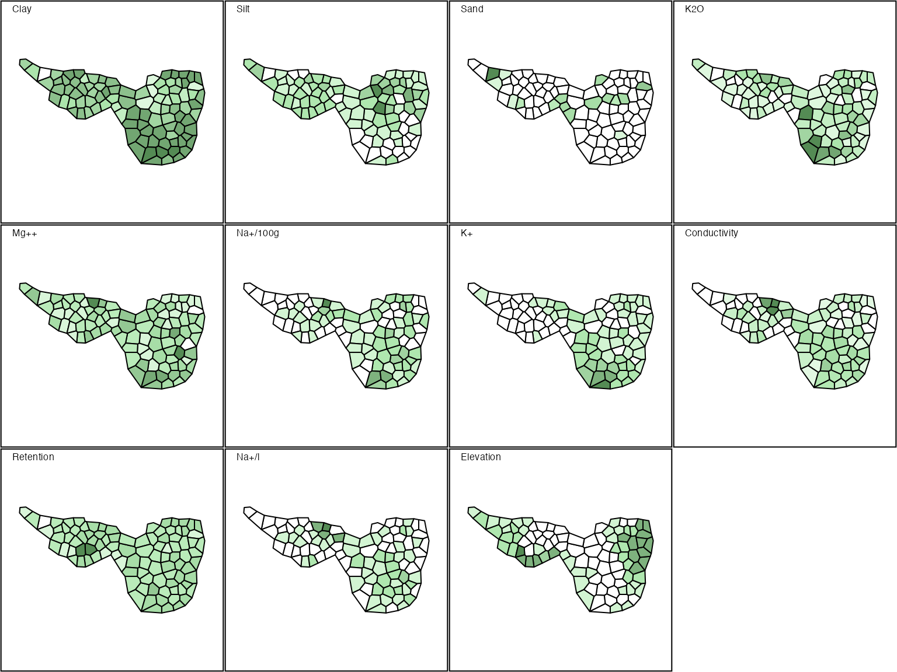
MC.env <- moran.randtest(mafragh$env, listwgab, nrepet = 999)
MC.env## class: krandtest lightkrandtest
## Monte-Carlo tests
## Call: moran.randtest(x = mafragh$env, listw = listwgab, nrepet = 999)
##
## Number of tests: 11
##
## Adjustment method for multiple comparisons: none
## Permutation number: 999
## Test Obs Std.Obs Alter Pvalue
## 1 Clay 0.4464655 6.552261 greater 0.001
## 2 Silt 0.3967605 5.946167 greater 0.001
## 3 Sand 0.1218959 2.114549 greater 0.033
## 4 K2O 0.2916865 4.470113 greater 0.001
## 5 Mg++ 0.2040580 3.220200 greater 0.003
## 6 Na+/100g 0.3404142 5.138034 greater 0.001
## 7 K+ 0.6696787 10.193028 greater 0.001
## 8 Conductivity 0.3843430 5.891744 greater 0.001
## 9 Retention 0.2217547 3.609803 greater 0.003
## 10 Na+/l 0.3075238 4.791118 greater 0.001
## 11 Elevation 0.6136770 9.047577 greater 0.001For a given SWM, the upper and lower bounds of MC are equal to \(\lambda_{max}
(n/\mathbf{1}\hspace{-0.05cm}^{\top}\hspace{-0.05cm}\mathbf{W1})\)
and \(\lambda_{min}
(n/\mathbf{1}\hspace{-0.05cm}^{\top}\hspace{-0.05cm}\mathbf{W1})\)
where \(\lambda_{max}\) and \(\lambda_{min}\) are the extreme eigenvalues
of \(\mathbf{\Omega}\). These extreme
values are returned by the moran.bounds function:
mc.bounds <- moran.bounds(listwgab)
mc.bounds## Imin Imax
## -0.9474872 1.0098330Hence, it is possible to display Moran’s coefficients computed on environmental variables and the minimum and maximum values for the given SWM:
env.maps <- s1d.barchart(MC.env$obs, labels = MC.env$names, plot = FALSE, xlim = 1.1 * mc.bounds, paxes.draw = TRUE, pgrid.draw = FALSE)
addline(env.maps, v = mc.bounds, plot = TRUE, pline.col = 'red', pline.lty = 3)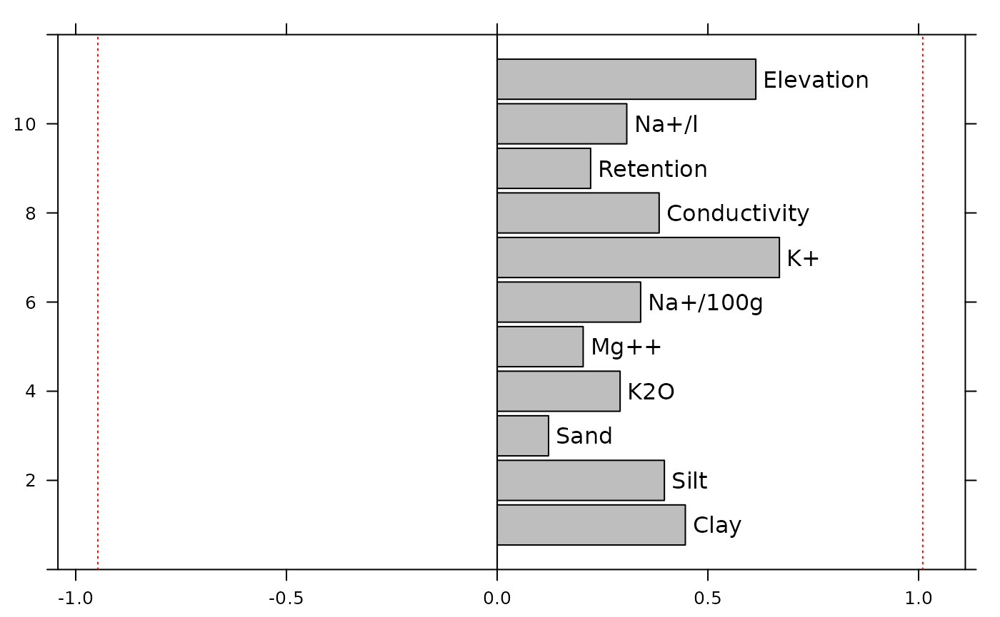
Decomposing Moran’s coefficient
The standard test based on MC is not able to detect the coexistence
of positive and negative autocorrelation structures (i.e., it leads to a
non-significant test). The moranNP.randtest function allows
to decompose the standard MC statistic into two additive parts and thus
to test for positive and negative autocorrelation separately (Dray
2011). For instance, we can test the spatial distribution of
Magnesium. Only positive autocorrelation is detected:
NP.Mg <- moranNP.randtest(mafragh$env[,5], listwgab, nrepet = 999, alter = "two-sided")
NP.Mg## class: krandtest lightkrandtest
## Monte-Carlo tests
## Call: moranNP.randtest(x = mafragh$env[, 5], listw = listwgab, nrepet = 999,
## alter = "two-sided")
##
## Number of tests: 2
##
## Adjustment method for multiple comparisons: none
## Permutation number: 999
## Test Obs Std.Obs Alter Pvalue
## 1 I+ 0.3611756 3.743501 greater 0.002
## 2 I- -0.1571176 1.552759 less 0.944
plot(NP.Mg)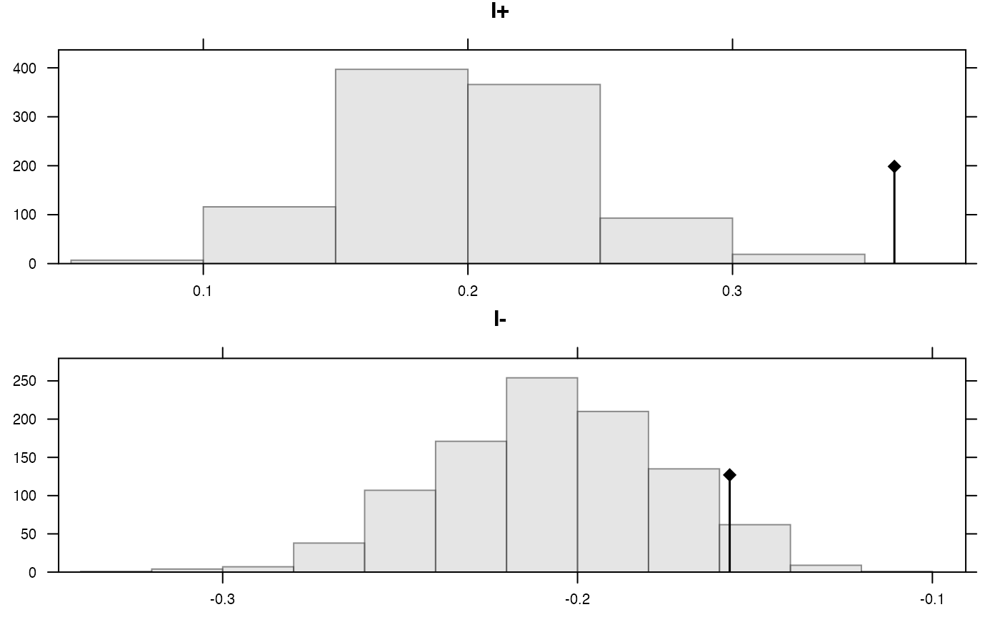
sum(NP.Mg$obs)## [1] 0.204058
MC.env$obs[5]## Mg++.statistic
## 0.204058MULTISPATI analysis
When multivariate data are considered, it is possible to search for spatial structures by computing univariate statistics (e.g., Moran’s Coefficient) on each variable separately. Another alternative is to summarize data by multivariate methods and then detect spatial structures using the output of the analysis. For instance, we applied a centred principal component analysis on the abundance data:
pca.hell <- dudi.pca(mafragh$flo, scale = FALSE, scannf = FALSE, nf = 2)MC can be computed for PCA scores and the associated spatial structures can be visualized on a map:
moran.randtest(pca.hell$li, listw = listwgab)## class: krandtest lightkrandtest
## Monte-Carlo tests
## Call: moran.randtest(x = pca.hell$li, listw = listwgab)
##
## Number of tests: 2
##
## Adjustment method for multiple comparisons: none
## Permutation number: 999
## Test Obs Std.Obs Alter Pvalue
## 1 Axis1 0.4830837 7.405295 greater 0.001
## 2 Axis2 0.4613738 7.119489 greater 0.001
s.value(mxy, pca.hell$li, Sp = mafragh$Spatial.contour, symbol = "circle", col = c("white", "palegreen4"), ppoint.cex = 0.6)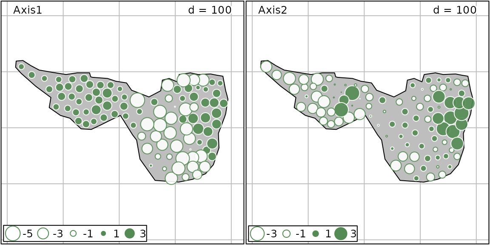
PCA results are highly spatially structured. Results can be
optimized, compared to this two-step procedure, by searching directly
for multivariate spatial structures. The multispati
function implements a method (Dray, Saïd, and Débias
2008) that search for axes maximizing the product of variance
(multivariate aspect) by MC (spatial aspect):
ms.hell <- multispati(pca.hell, listw = listwgab, scannf = F)The summary method can be applied on the resulting
object to compare the results of initial analysis (axis 1 (RS1) and axis
2 (RS2)) and those of the multispati method (CS1 and CS2):
summary(ms.hell)##
## Multivariate Spatial Analysis
## Call: multispati(dudi = pca.hell, listw = listwgab, scannf = F)
##
## Scores from the initial duality diagram:
## var cum ratio moran
## RS1 5.331174 5.331174 0.2834660 0.4830837
## RS2 1.972986 7.304159 0.3883725 0.4613738
##
## Multispati eigenvalues decomposition:
## eig var moran
## CS1 2.933824 4.833900 0.6069269
## CS2 1.210573 1.892671 0.6396110The MULTISPATI analysis allows to better identify spatial structures (higher MC values).
Scores of the analysis can be mapped and highlight some spatial patterns of community composition:
g.ms.maps <- s.value(mafragh$xy, ms.hell$li, Sp = mafragh$Spatial.contour, symbol = "circle", col = c("white", "palegreen4"), ppoint.cex = 0.6)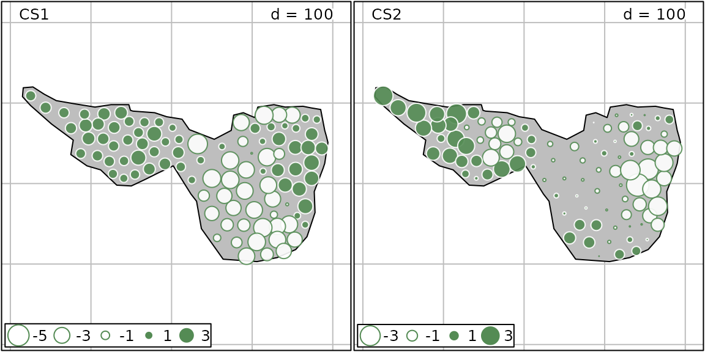
The spatial distribution of several species can be inserted to facilitate the interpretation of the outputs of the analysis:
g.ms.spe <- s.arrow(ms.hell$c1, plot = FALSE)
g.abund <- s.value(mxy, mafragh$flo[, c(12,11,31,16)],
Sp = mafragh$Spatial.contour, symbol = "circle", col = c("black", "palegreen4"), plegend.drawKey = FALSE, ppoint.cex = 0.4, plot = FALSE)
p1 <- list(c(0.05, 0.65), c(0.01, 0.25), c(0.74, 0.58), c(0.55, 0.05))
for (i in 1:4)
g.ms.spe <- insert(g.abund[[i]], g.ms.spe, posi = p1[[i]], ratio = 0.25, plot = FALSE)
g.ms.spe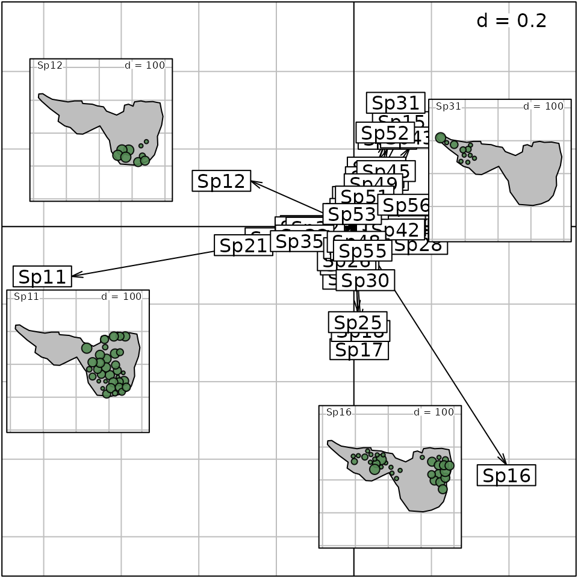
Multiscale analysis with MEM
All the methods presented in the previous section consider the whole SWM to integrate the spatial information. In this section, we present alternatives that use MEM to introduce the notion of space at multiple scales.
Scalogram and MSPA
The full set of MEMs provide a basis of orthogonal vectors that can be used to decompose the total variance of a given variable at multiple scales. This approach consists simply in computing \(R^2\) values associated to each MEM to build a scalogram indicating the part of variance explained by each MEM. These values can be tested by a permutation procedure. Here, we illustrate the procedure with the abundance of Bolboschoenus maritimus (Sp11) which is mainly located in the central part of the study area:
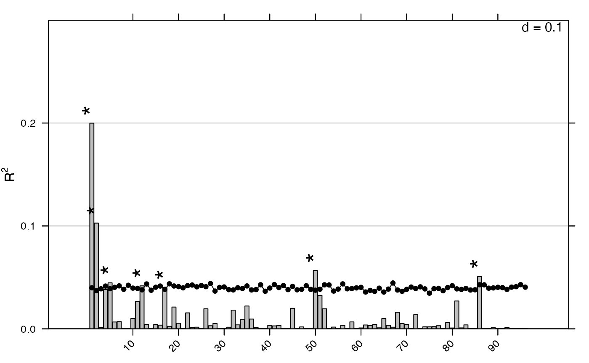 As the number of MEMs is equal to the number of sites minus one and as MEMs are othogonal, the variance is fully decomposed:
sum(scalo$obs)## [1] 1When the number of MEMs is high, the results provided by this
approach can be difficult to interpret. In this case it can be
advantageous to use smoothed scalograms (using the nblocks
argument) where spatial components are formed by groups of successive
MEMs:
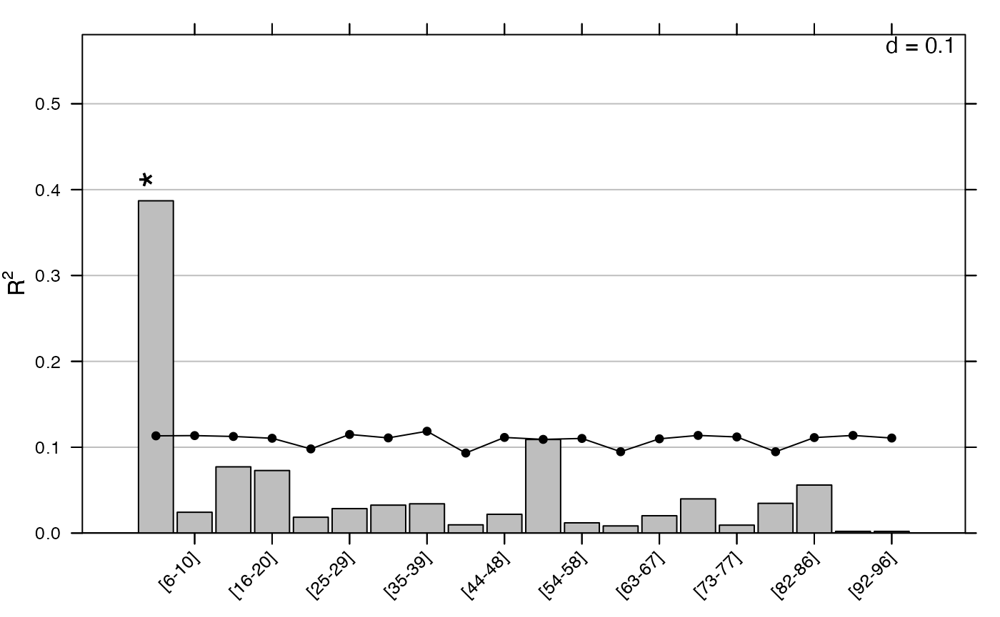
It is possible to compute scalograms for all the species of the data
table. These scalograms can be stored in a table and analysing this
table with a PCA allows to identify the important scales of the data set
and the similarities between species based on their spatial
distributions (Jombart, Dray, and Dufour 2009). This
analysis named Multiscale Patterns Analysis (MSPA) is available in the
mspa function that takes the results of a multivariate
analysis (an object of class dudi) as argument:
mspa.hell <- mspa(pca.hell, listwgab, scannf = FALSE, nf = 2)
g.mspa <- scatter(mspa.hell, posieig = "topright", plot = FALSE)
g.mem <- s.value(mafragh$xy, mem.gab[, c(1, 2, 6, 3)], Sp = mafragh$Spatial.contour, ppoints.cex = 0.4, plegend.drawKey = FALSE, plot = FALSE)
g.abund <- s.value(mafragh$xy, mafragh$flo[, c(31,54,25)], Sp = mafragh$Spatial.contour, symbol = "circle", col = c("black", "palegreen4"), plegend.drawKey = FALSE, ppoint.cex = 0.4, plot = FALSE)
p1 <- list(c(0.01, 0.44), c(0.64, 0.15), c(0.35, 0.01), c(0.15, 0.78))
for (i in 1:4)
g.mspa <- insert(g.mem[[i]], g.mspa, posi = p1[[i]], plot = FALSE)
p2 <- list(c(0.27, 0.54), c(0.35, 0.35), c(0.75, 0.31))
for (i in 1:3)
g.mspa <- insert(g.abund[[i]], g.mspa, posi = p2[[i]], plot = FALSE)
g.mspa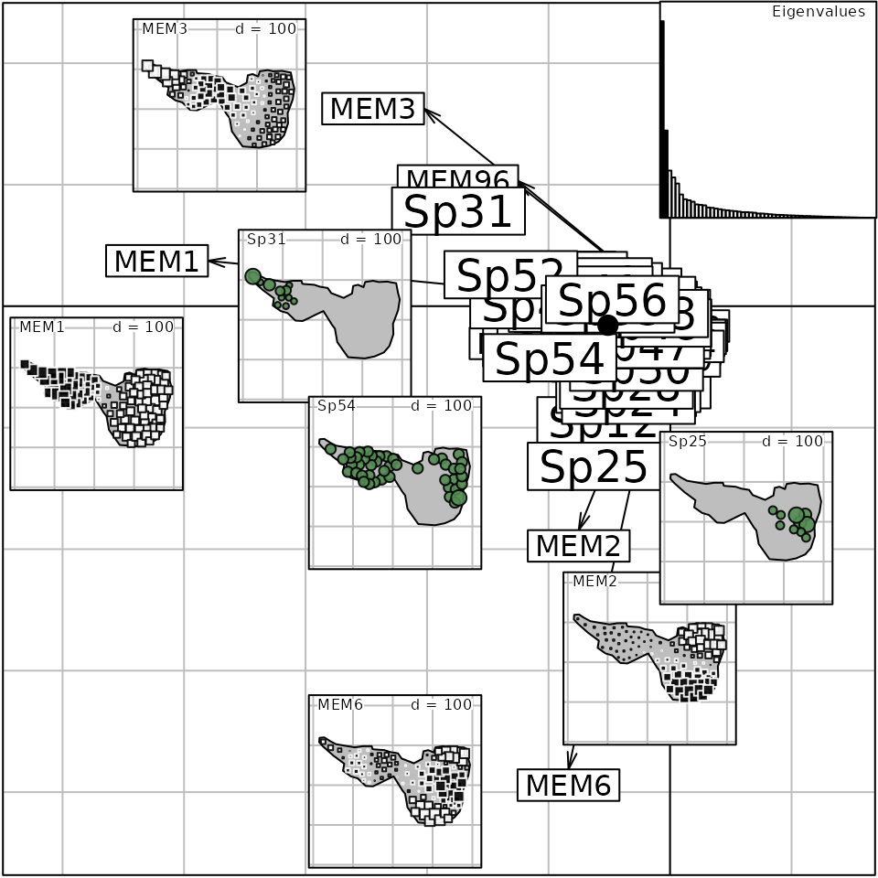
Selection of SWM and MEM
Scalograms and MSPA require the full set of MEMs to decompose the
total variation. However, regression-based methods (described in next
sections) could suffer from overfitting if the number of explanatory
variables is too high and thus require a procedure to reduce the number
of MEMs. The function mem.select proposes different
alternatives to perform this selection using the argument
method (Bauman, Drouet, Dray, et al. 2018). By
default, only MEMs associated to positive eigenvalues are considered
(argument MEM.autocor = "positive") and a forward selection
(based on \(R^2\) statistic) is
performed after a global test (method = "FWD"):
mem.gab.sel <- mem.select(pca.hell$tab, listw = listwgab)## Procedure stopped (alpha criteria): pvalue for variable 16 is 0.075000 (> 0.050000)
mem.gab.sel$global.test## $obs
## [1] 0.3593333
##
## $pvalue
## [1] 1e-04
mem.gab.sel$summary## variables order R2 R2Cum AdjR2Cum pvalue
## 1 MEM1 1 0.08696619 0.08696619 0.07735531 0.001
## 2 MEM2 2 0.05675316 0.14371935 0.12550061 0.001
## 3 MEM6 6 0.04244014 0.18615948 0.15990656 0.001
## 4 MEM4 4 0.03528604 0.22144553 0.18759533 0.001
## 5 MEM5 5 0.02987158 0.25131711 0.21018069 0.002
## 6 MEM12 12 0.02553209 0.27684919 0.22863914 0.001
## 7 MEM3 3 0.02515410 0.30200330 0.24710468 0.002
## 8 MEM7 7 0.01870460 0.32070790 0.25895407 0.010
## 9 MEM10 10 0.01810649 0.33881440 0.27041589 0.012
## 10 MEM17 17 0.01801775 0.35683215 0.28204519 0.019
## 11 MEM31 31 0.01549756 0.37232971 0.29110179 0.016
## 12 MEM9 9 0.01472660 0.38705632 0.29949293 0.024
## 13 MEM11 11 0.01390862 0.40096493 0.30714016 0.036
## 14 MEM35 35 0.01279786 0.41376280 0.31367352 0.045
## 15 MEM16 16 0.01217328 0.42593608 0.31962795 0.040Results of the global test and of the forward selection are returned
in elements global.test and summary. The
subset of selected MEMs are in MEM.select and can be used
in subsequent analysis (see sections on Redundancy
Analysis and Variation Partitioning).
class(mem.gab.sel$MEM.select)## [1] "orthobasisSp" "orthobasis" "data.frame"
dim(mem.gab.sel$MEM.select)## [1] 97 15Different SWMs can be defined for a given data set. An important
issue concerns the selection of a SWM. This choice can be driven by
biological hypotheses but a data-driven procedure is provided by the
listw.select function. A list of potential candidates can
be built using the listw.candidates function. Here, we
create four candidates using two definitions for neighborhood (Gabriel
and Relative graphs using c("gab", "rel")) and two
weighting functions (binary and linear using
c("bin", "flin")):
cand.lw <- listw.candidates(mxy, nb = c("gab", "rel"), weights = c("bin", "flin"))The function listw.select proposes different methods for
selecting a SWM (Bauman, Drouet, Fortin, et al. 2018).
The procedure is very similar to the one proposed by
mem.select except that p-value corrections are applied on
global tests taking into account the fact that several candidates are
used. By default (method = "FWD"), it applies forward
selection on the significant SWMs and selects among these the SWM for
which the subset of MEMs yields the highest adjusted R.
sel.lw <- listw.select(pca.hell$tab, candidates = cand.lw, nperm = 99)## Procedure stopped (alpha criteria): pvalue for variable 16 is 0.080000 (> 0.050000)
## Procedure stopped (alpha criteria): pvalue for variable 15 is 0.060000 (> 0.050000)
## Procedure stopped (alpha criteria): pvalue for variable 19 is 0.070000 (> 0.050000)
## Procedure stopped (alpha criteria): pvalue for variable 20 is 0.100000 (> 0.050000)A summary of the procedure is available:
sel.lw$candidates## R2Adj Pvalue N.var R2Adj.select
## Gabriel_Binary 0.3571605 0.00039994 15 0.2938182
## Gabriel_Linear 0.3745815 0.00039994 14 0.3059982
## Relative_Binary 0.3788734 0.00039994 18 0.3299666
## Relative_Linear 0.3728263 0.00039994 19 0.3349199
sel.lw$best.id## Relative_Linear
## 4The corresponding SWM can be obtained by
lw.best <- cand.lw[[sel.lw$best.id]]The subset of MEMs corresponding to the best SWM is also returned by the function:
sel.lw$best## $global.test
## $global.test$obs
## [1] 0.3728263
##
## $global.test$pvalue
## [1] 0.00039994
##
##
## $MEM.select
## Orthobasis with 97 rows and 19 columns
## Only 6 rows and 4 columns are shown
## MEM8 MEM2 MEM7 MEM3
## 1 0.57335813 2.041032 -0.3239282 -0.2075280
## 2 0.84824433 1.753831 0.9633804 -0.1781151
## 3 0.58158368 1.020786 1.1627724 -0.1024424
## 4 -0.68418987 1.297336 -2.5394961 -0.1218499
## 5 -0.03242453 1.254399 -1.1615363 -0.1271501
## 6 0.49026241 2.343757 -0.3132711 -0.2287866
##
## $summary
## variables order R2 R2Cum AdjR2Cum pvalue
## 1 MEM8 8 0.05804130 0.0580413 0.04812594 0.01
## 2 MEM2 2 0.04694559 0.1049869 0.08594406 0.01
## 3 MEM7 7 0.04184439 0.1468313 0.11930971 0.01
## 4 MEM3 3 0.03648604 0.1833173 0.14780937 0.01
## 5 MEM38 38 0.03294060 0.2162579 0.17319516 0.01
## 6 MEM1 1 0.02556350 0.2418214 0.19127617 0.01
## 7 MEM11 11 0.02461285 0.2664343 0.20873808 0.01
## 8 MEM22 22 0.02301480 0.2894491 0.22485352 0.01
## 9 MEM9 9 0.01962969 0.3090788 0.23760414 0.01
## 10 MEM13 13 0.01827667 0.3273554 0.24914093 0.02
## 11 MEM6 6 0.01795449 0.3453099 0.26058531 0.01
## 12 MEM12 12 0.01699980 0.3623097 0.27121110 0.01
## 13 MEM16 16 0.01698129 0.3792910 0.28207151 0.03
## 14 MEM37 37 0.01683864 0.3961296 0.29302982 0.02
## 15 MEM14 14 0.01669087 0.4128205 0.30408356 0.02
## 16 MEM21 21 0.01363371 0.4264542 0.31174506 0.03
## 17 MEM27 27 0.01355500 0.4400092 0.31950487 0.02
## 18 MEM17 17 0.01343125 0.4534405 0.32731134 0.02
## 19 MEM5 5 0.01310988 0.4665504 0.33491992 0.04Canonical Analysis
Canonical methods are widely used to explain the structure of an
abundance table by environmental and/or spatial variables. For instance,
Redundancy Analysis (RDA) is available in functions pcaiv
(package ade4) or rda (package
vegan). RDA can be applied using selected MEMs as
explanatory variables to study the spatial patterns in plant
communities, :
rda.hell <- pcaiv(pca.hell, sel.lw$best$MEM.select, scannf = FALSE)The permutation test based on the percentage of variation explained by the spatial predictors (\(R^2\)) is highly significant:
test.rda <- randtest(rda.hell)
test.rda## Monte-Carlo test
## Call: randtest.pcaiv(xtest = rda.hell)
##
## Observation: 0.4665504
##
## Based on 99 replicates
## Simulated p-value: 0.01
## Alternative hypothesis: greater
##
## Std.Obs Expectation Variance
## 15.485157208 0.195439797 0.000306522
plot(test.rda)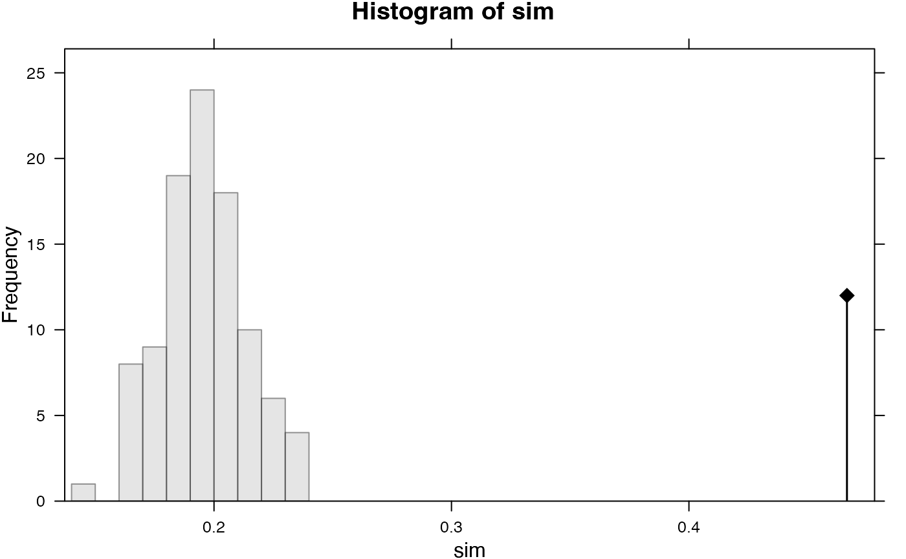
Associated spatial structures can be mapped:
s.value(mxy, rda.hell$li, Sp = mafragh$Spatial.contour, symbol = "circle", col = c("white", "palegreen4"), ppoint.cex = 0.6)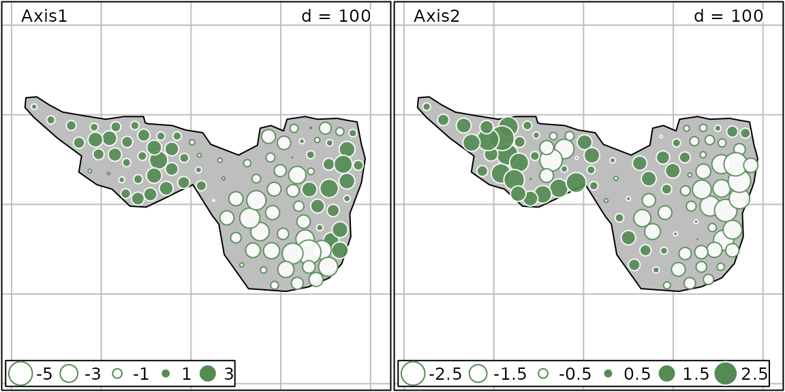
Variation partitioning
Spatial structures identified by Redundancy Analysis in the previous section can be due to niche filtering or other
processes (e.g., neutral dynamics). Variation partitioning (Borcard, Legendre, and Drapeau 1992)
based on adjusted \(R^2\) (Peres-Neto et al. 2006) can be used to
identify the part of spatial structures that can be explained or not by
environmental predictors. This method is implemented in the function
varpart of package vegan that is able to deal
with up to four tables of predictors:
## Loading required package: permute## Loading required package: lattice## This is vegan 2.6-4
vp1 <- varpart(pca.hell$tab, mafragh$env, sel.lw$best$MEM.select)
vp1##
## Partition of variance in RDA
##
## Call: varpart(Y = pca.hell$tab, X = mafragh$env,
## sel.lw$best$MEM.select)
##
## Explanatory tables:
## X1: mafragh$env
## X2: sel.lw$best$MEM.select
##
## No. of explanatory tables: 2
## Total variation (SS): 1824.3
## Variance: 19.003
## No. of observations: 97
##
## Partition table:
## Df R.squared Adj.R.squared Testable
## [a+c] = X1 11 0.23666 0.13787 TRUE
## [b+c] = X2 19 0.46655 0.33492 TRUE
## [a+b+c] = X1+X2 30 0.55492 0.35260 TRUE
## Individual fractions
## [a] = X1|X2 11 0.01768 TRUE
## [b] = X2|X1 19 0.21473 TRUE
## [c] 0 0.12019 FALSE
## [d] = Residuals 0.64740 FALSE
## ---
## Use function 'rda' to test significance of fractions of interest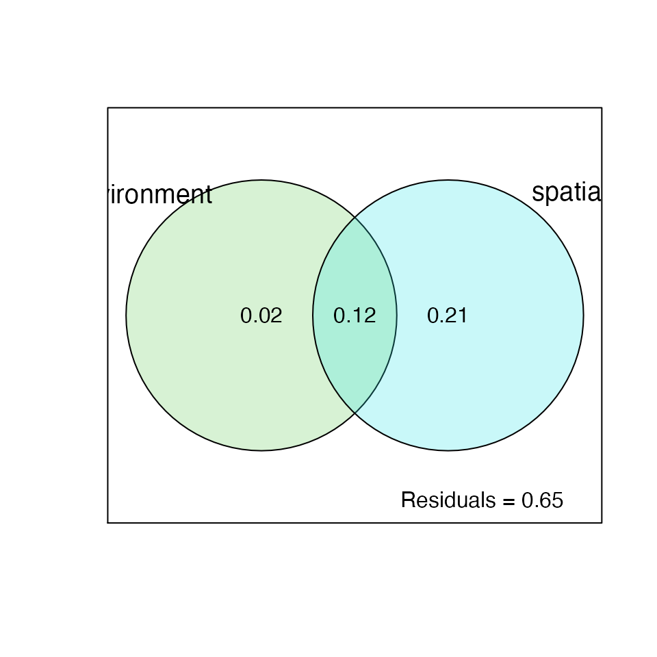
A simpler function varipart is available in
ade4 that is able to deal only with two tables of
explanatory variables:
vp2 <- varipart(pca.hell$tab, mafragh$env, sel.lw$best$MEM.select)
vp2## Variation Partitioning
## class: varipart list
##
## Test of fractions:
## class: krandtest lightkrandtest
## Monte-Carlo tests
## Call: varipart(Y = pca.hell$tab, X = mafragh$env, W = sel.lw$best$MEM.select)
##
## Number of tests: 3
##
## Adjustment method for multiple comparisons: none
## Permutation number: 999
## Test Obs Std.Obs Alter Pvalue
## 1 ab 0.2366554 8.166258 greater 0.001
## 2 bc 0.4665504 15.200387 greater 0.001
## 3 abc 0.5549152 11.255494 greater 0.001
##
##
## Individual fractions:
## a b c d
## 0.0883648 0.1482906 0.3182598 0.4450848
##
## Adjusted fractions:
## a b c d
## 0.01869906 0.11903282 0.21538309 0.64688504Estimates and testing procedures associated to standard variation
partitioning can be biased in the presence of spatial autocorrelation in
both response and explanatory variables. To solve this issue,
adespatial provides functions to perform
spatially-constrained randomization using Moran’s Spectral
Randomization.
Testing with Moran’s Spectral Randomization
Moran’s Spectral Randomization (MSR) allows to generate random replicates that preserve the spatial structure of the original data (Wagner and Dray 2015). These replicates can be used to create spatially-constrained null distribution. For instance, we consider the case of bivariate correlation between Elevation and Sodium:
cor(mafragh$env[,10], mafragh$env[,11])## [1] -0.4033508This correlation can be tested by a standard t-test:
cor.test(mafragh$env[,10], mafragh$env[,11])##
## Pearson's product-moment correlation
##
## data: mafragh$env[, 10] and mafragh$env[, 11]
## t = -4.2964, df = 95, p-value = 4.195e-05
## alternative hypothesis: true correlation is not equal to 0
## 95 percent confidence interval:
## -0.5579139 -0.2217439
## sample estimates:
## cor
## -0.4033508However this test assumes independence between observations. This condition is not observed in our data as suggested by the computation of MC:
moran.randtest(mafragh$env[,10], lw.best)## Monte-Carlo test
## Call: moran.randtest(x = mafragh$env[, 10], listw = lw.best)
##
## Observation: 0.3833853
##
## Based on 999 replicates
## Simulated p-value: 0.001
## Alternative hypothesis: greater
##
## Std.Obs.statistic Expectation Variance
## 4.341745200 -0.007295609 0.008096842An alternative is to generate random replicates for the two variables with same level of spatial autocorrelation:
msr1 <- msr(mafragh$env[,10], lw.best)
summary(moran.randtest(msr1, lw.best, nrepet = 2)$obs)## Min. 1st Qu. Median Mean 3rd Qu. Max.
## 0.3682 0.3776 0.3818 0.3818 0.3863 0.3940
msr2 <- msr(mafragh$env[,11], lw.best)Then, the statistic is computed on observed and simulated data to build a randomization test:
obs <- cor(mafragh$env[,10], mafragh$env[,11])
sim <- sapply(1:ncol(msr1), function(i) cor(msr1[,i], msr2[,i]))
testmsr <- as.randtest(obs = obs, sim = sim, alter = "two-sided")
testmsr## Monte-Carlo test
## Call: as.randtest(sim = sim, obs = obs, alter = "two-sided")
##
## Observation: -0.4033508
##
## Based on 99 replicates
## Simulated p-value: 0.01
## Alternative hypothesis: two-sided
##
## Std.Obs Expectation Variance
## -2.595386551 -0.002832713 0.023814423The function msr is generic and several methods are
implemented in adespatial. For instance, it can be used to
correct estimates and significance of the environmental fraction in the
case of a variation partitioning (Clappe, Dray, and Peres-Neto
2018) computed with the varipart function:
msr(vp2, listwORorthobasis = lw.best)## Variation Partitioning
## class: varipart list
##
## Test of fractions:
## Monte-Carlo test
## Call: msr.varipart(x = vp2, listwORorthobasis = lw.best)
##
## Observation: 0.2366554
##
## Based on 999 replicates
## Simulated p-value: 0.001
## Alternative hypothesis: greater
##
## Std.Obs Expectation Variance
## 3.9356903225 0.1533142507 0.0004484117
##
## Individual fractions:
## a b c d
## 0.0883648 0.1482906 0.3182598 0.4450848
##
## Adjusted fractions:
## a b c d
## 0.01070405 0.08772814 0.24668776 0.65488004